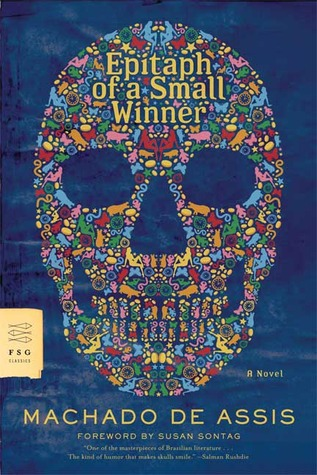
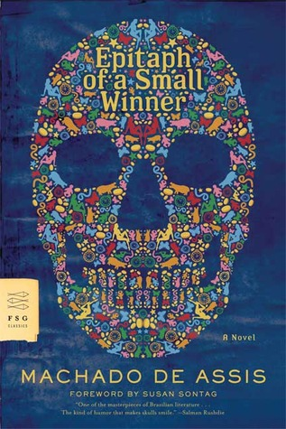

Listen: {{book.podcast.title}}
Read: {{book.review.title}}

{{featured.review.title}}
by {{featured.review.reviewer}}
{{featured.review.teaser}}...

Not familiar with those books? Start with these short asides:
{{aside.title}}
Next Episode:
Brazilian Literature Month:
 
